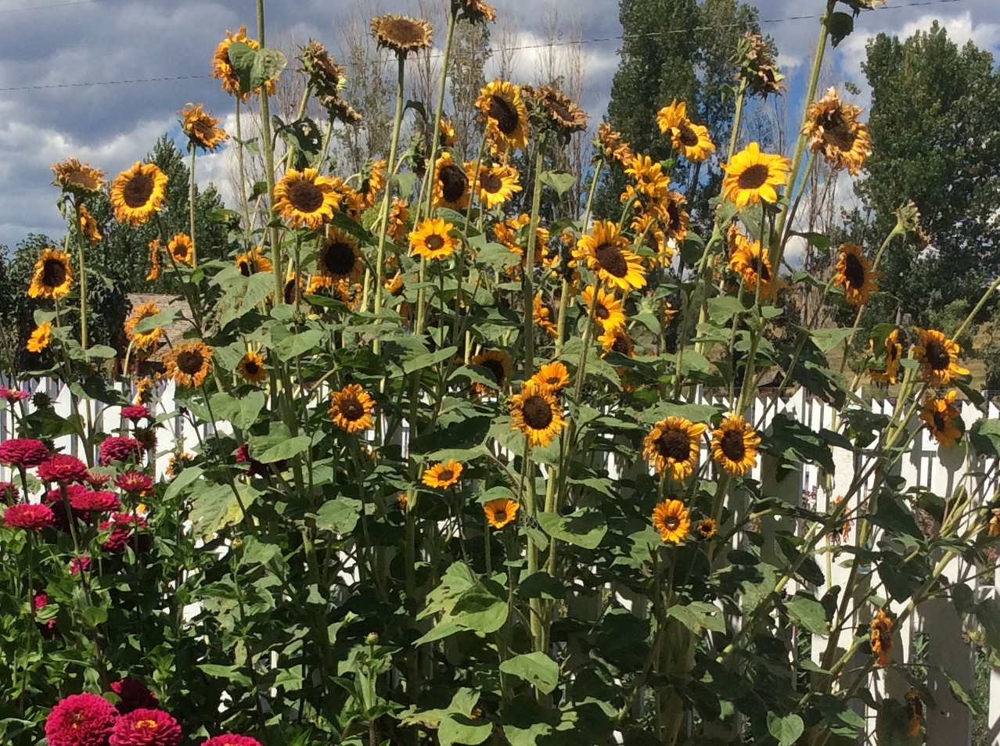

SUNFLOWERS
Sunflower heirloom varieties grow true to seed and are the best types to harvest for replanting.

- The seeds are ready to harvest when the back side of the head turns brown, the petals have fallen off and the flower looks dead.
- Cut the stalk, put the sunflower head first in a brown paper bag, and place in a warm dry room for about a week.
- Check the head for dryness, rub your fingers over the head and if the seeds fall out easily, they are ready to be stored.
- Use your fingers to get the seeds to pop out. Pick out the plump seeds to save and discard the rest.
- Line a cardboard tray with paper towels or newspapers. Spread the seeds out, in a single layer, to dry for a few days.
- Place the seeds in a sealed paper envelope, Store the envelope, in the refrigerator, until next spring.
Go to Fall Flower Home Page